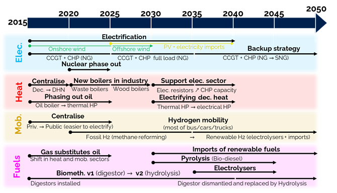

Toolbox
Typo
Italic
bold
code
Caution
text text
Danger
text text
Tip
text
Note
text
Code sample
- some code::
Here is the code
- it::
here is another block
Include a figure:
Create a tables
A basic table:
This is a table |
a12 |
a13 |
a14 |
|---|---|---|---|
Table |
y |
y |
y |
Table |
y |
y |
y |
Table |
y |
y |
y |
Table |
y |
y |
y |
here here |
a11 |
a12 |
a13 |
a14 |
|---|---|---|---|
a21 |
a22 |
a23 |
a24 |
header_1 |
header_2 |
header_3 |
|---|---|---|
a11 |
a12 |
a13 |
a21 |
a22 |
a23 |
Create links:
URL links
this is a link: https://www.google.com
an url hidden in the text: <https://www.google.com>
Internal links
The toolbox containing all the tips are given here: ..targetedlink.. Toolbox with an hyper link This is a link to whereever I want : Typo